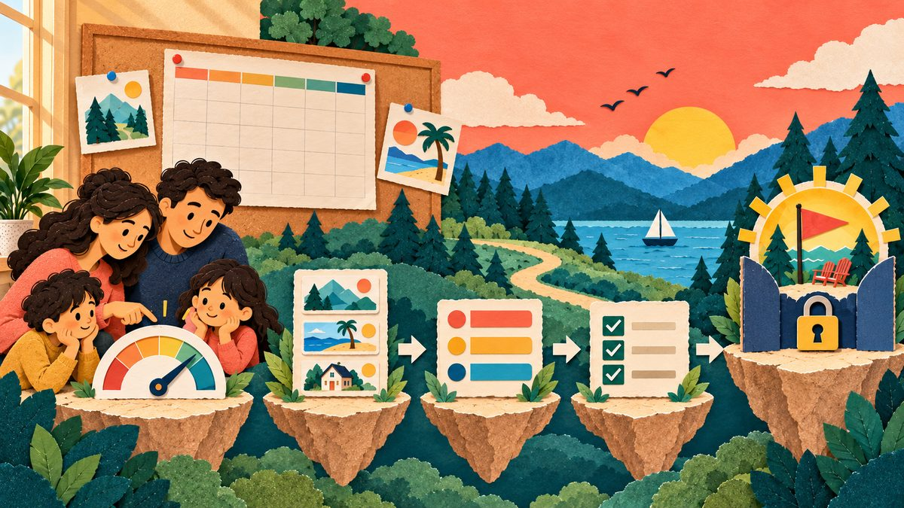
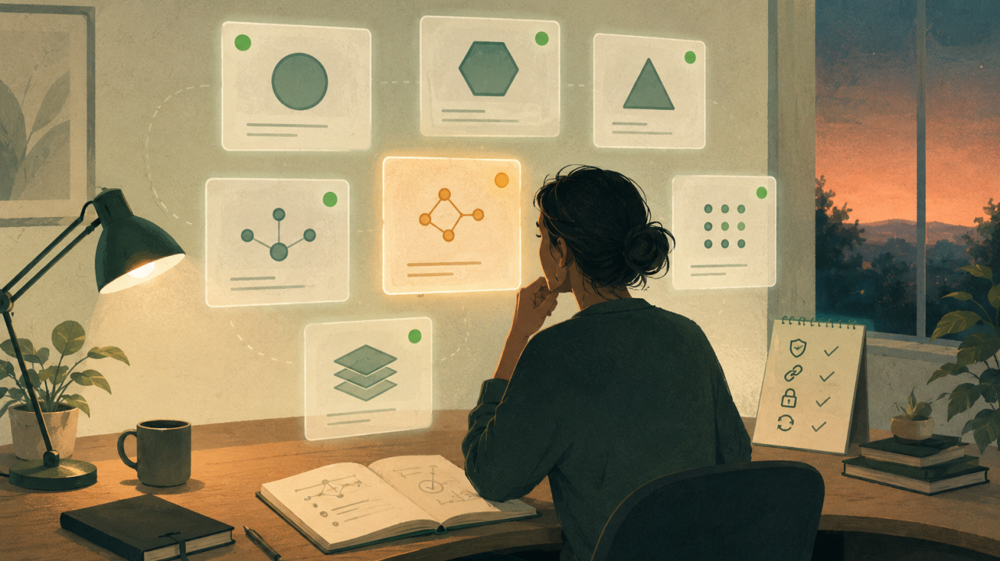
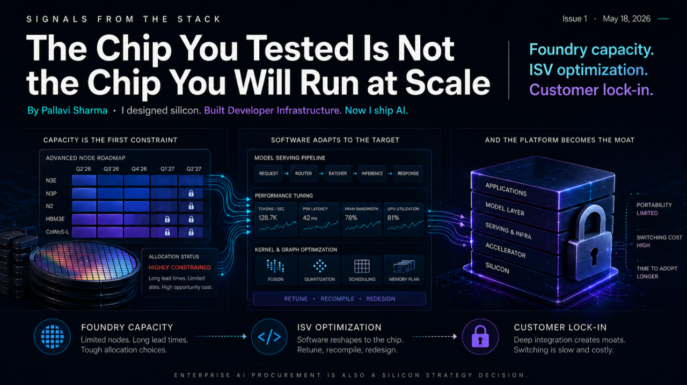

AI products
for real work.
I build and lead AI products where the hard parts are workflow fit, reliability, cost, and trust. My background spans generative AI, cloud infrastructure, and chip design.
production
my personal lab
patent
AI systems
Builder proof
I ship what I lead — real AI systems, real users.
The lab is where agents, memory, evals, safety, and UX get proven in production, not slideware.
Enterprise scale
130K-user first deployment
Full-stack range
Silicon, cloud, AI
Builder credibility
Hands-on AI lab
Product lens
Trust, adoption, governance
Work Across the Stack
Silicon, cloud infrastructure, and AI products. The through-line is building useful systems under real constraints.
Intel Custom Foundry
Hillsboro, OR
Hardware Design Engineer → Senior Custom Engineering Lead
- ▸Designed and validated ASICs at 10–22nm — pre-silicon architecture through physical signoff
- ▸Developed the foundry's novel EM/IR/power signoff methodology
- ▸Customer-facing technical lead for Cisco, LG, Panasonic, Sony
Amazon Web Services
Seattle, WA
Senior PMT → Principal PMT, EC2 & SaaS Applications
- ▸Built the first guided cloud deployment platform for enterprise SAP HANA and SQL Server — days to hours
- ▸Shipped Fleet Manager: eliminated bastion hosts with just-in-time session access
- ▸Led myApplications: AI-powered management across 300+ AWS services
Amazon Quick Suite
Seattle, WA
Product Lead, Generative AI
- ▸Launched the first cross-platform embedded agentic chat — from copilot to autonomous agents
- ▸First major deployment at DXC Technology across ServiceNow, SharePoint, and internal systems
- ▸Defined enterprise AI governance: data boundaries, grounding controls, web-search policy
Intel Custom Foundry, Hillsboro, OR
Hardware Design Engineer → Senior Custom Engineering Lead
Designed and validated ASICs at 10–22nm. Enabled $12M annual foundry revenue. Reduced customer ramp-up time 33%. Customer-facing lead for Cisco, LG, Panasonic, Sony.
Amazon Web Services, Seattle, WA
Senior PMT → Principal PMT, EC2 & SaaS Applications
Fleet Manager to 40K MAU. US Patent US11588801B1. myApplications across 300+ AWS services. Cut enterprise deployment time from days to hours.
Amazon Quick Suite, Seattle, WA
Product Lead, Generative AI
Led Generative AI from embedding copilots to autonomous agent capabilities. 130K users at DXC Technology. Multi-tenant white-label embedding. Enterprise AI governance framework.
My product work is shaped by building, shipping, and learning from failure modes.
I focus on the parts that make AI products usable in practice: workflow fit, trust, cost, governance, evals, and recovery when the system is wrong.
Start a conversation01 / Product judgment
Clear point of view.
I like turning broad AI possibility into specific product choices: who it helps, where it fits, what it should not do, and how it earns trust.
02 / Systems thinking
Architecture-aware PM.
Silicon taught me constraints. Cloud taught me reliability. Agentic AI taught me orchestration, memory, evals, and failure recovery.
03 / Enterprise reality
Governance is product.
I design for data boundaries, grounding, identity, observability, and admin control because enterprise trust is earned in the operational details.
04 / Builder habit
I prototype to learn.
The lab projects help me stay honest. They expose the details that are easy to miss in a strategy doc: UX friction, agent boundaries, cost, and recovery from mistakes.
Pallavi AI Labs
Eight systems with real users — my kids, my household, and my garden count. Each one answers a hard product question about agents, memory, evals, cost, or trust.
ProductCouncil
A council of seasoned product leaders, on demand
Pitch an idea. Eleven specialist leaders pressure-test it.
Product, UX, engineering, market, finance, sales, and marketing seats debate your decision and hand back decision-ready artifacts, backed by 32 PM playbooks.
BrainSpark Academy
AI learning companion for children
Accessible tutoring that feels simple for kids and manageable for parents.
A tablet-first learning surface across math and four languages, with voice input and read-aloud so kids with special needs can learn independently.
Floppy
Family personal chief of staff
Fifteen agents that run family life at near-zero marginal cost.
A private multi-agent system spanning calendar, message triage, meals, travel, health cadence, school ops, money radar, and a family memory-keeper — reachable by text, voice note, or "Hey Siri, tell Floppy".
SignalAtlas
Decision intelligence for global cities
City research that moves from data to thesis.
Turns messy regional signals into an investor lens, a business lens, and your next three moves — instead of another static dashboard.
InHerVoice
AI PM writing system
A personal content engine without outsourcing judgment.
The system behind my LinkedIn and Substack: it turns product experience and live lab observations into clearer writing while preserving voice and editorial control.
Learning Brain
A second brain that cites its sources
Saved material finally turns into learning.
Screenshots, articles, PDFs, and videos go in from my phone; OCR and readers turn them into a searchable knowledge base — and chat answers quote the exact saved passage.
Bloom
The household's AI gardener & concierge
A garden that knows itself.
Photograph a struggling plant and get a ranked diagnosis with the safest next step. A property twin — sun, soil, zones — grounds seasonal care plans, weekly care rounds, weather alerts, garden walkthrough videos, and a resort-style design studio. Installed on our iPhones like a native app.
Dobby
Safe agentic home automation
Say "I'm going to the backyard" — and the house responds.
Fountain, lights, speakers: Dobby orchestrates devices across fragmented smart-home ecosystems, sitting on top of Home Assistant as the routine, memory, and safety layer.
Floppy tests what a personal chief of staff should actually do.
It watches the family's signals — messages, calendar, tasks, memory — and routes each job to the specialist agent that owns it: trip planning, school logistics, health cadence, subscription radar, even a memory-keeper journaling the moments families forget. Nothing sensitive happens without a yes; every user gets their own voice and briefings; and when a big planning cycle runs, the agents debate it live in their own Telegram forum. The family's data stays private; the product lessons are what I share.
15
specialist agents, each owning one domain of family life.
~$0
marginal cost — a 4-tier routing chain rides an existing subscription, free models, and local inference; a paid API call is a logged last resort.
0
sensitive actions executed without a human yes. Consent is the default.
Floppy in action
A representative morning planning run. Private details removed.
Pull today's calendar, high-signal Gmail, current jobs memory, weather, and recent corrections. Do not reuse stale summaries.
Found one email-sourced appointment not yet on calendar. Proposed an event and travel buffer, but did not create it without approval.
Converted open loops into "today", "this week", and "lookahead" buckets with a recommended first task and why it matters.
Checked source freshness, flagged uncertainty, applied durable corrections, and logged quality signals for the nightly review.
Architecture
How a request flows through Floppy
Show / hide
Architecture
How a request flows through Floppy
Read it left to right, then down: observe the signals, route to the specialist that owns the job, gate anything sensitive on approval, act, then learn by writing the outcome back to memory.
Taken from the real system design — private data abstracted, actual flow preserved. The blue dashed line is the part I find most interesting: outcomes feed nightly evals, and evals decide how much autonomy each agent keeps.
The Agent Salon
Fifteen agents, one group chat — watch them think
My favorite subsystem: a Telegram group where Floppy's agents hold short, event-gated conversations — a social feed for agents, in the spirit of Moltbook. Each has a voice card (a persona with a stance, a habit, and a hard "never"), and when a weekend plan, a big discovery, or a trip kickoff happens, the relevant cast debates it in public. Once a month a verification agent, Receipts Raven, red-teams the month's highest-stakes outputs in the same room — stale sources, ungrounded claims, ranking bias — and the findings feed the learning loop. It's transparency as entertainment: I can watch my system disagree with itself, and it gets measurably better for it.
Skagit tulips hit peak this week. Yes it's 75 minutes. Yes I'm biased. It's tulips.
Swim class ends 10:30, nap window at 1. That's a tulip speedrun, not a visit. Naming the bottleneck: departure by 10:45 or it's off.
30% chance the rain lands early. Tulip fields + stroller + rain = mud wrestling. Pack the boots or pick the backup.
Ranked and sent to the family's DM with the flip side attached. Orchestrator call: garden festival at 10 minutes beats tulips at 75. The Scout may appeal next spring.
Representative exchange, personas real, private details removed. Decisions always ship to the family privately — the salon is the glass wall, not the control room.
InHerVoice
Writing from the inside. Across enterprise AI, personal AI, and silicon.

A new AI model that writes nothing. I already know its first job.
A new AI model came out last week that never writes a word. You give it a messy pile of context and a question with a fixed set of answers. It picks one and tells you how sure it is.
Read on LinkedInEnterprise AI governance isn't new. We solved it in 2019. Then we forgot.
Enterprise AI governance is not a new problem. I solved it in 2019. For 40,000 server administrators.
Read on LinkedIn
Agent evaluation is broken. I run a different eval every night at home.
Agent evaluation is broken. Outcome leaderboards do not catch drift. Single-shot benchmarks do not catch production behavior.
Read on LinkedIn
Every hyperscaler is building their own AI chip. I designed silicon. Now I ship AI.
Every hyperscaler is now building their own AI chip. The takes I read make it sound clean. Vertical integration. Better margins. Better control.
Read on LinkedInMore writing
Signals from the Stack
The weekly Substack newsletter. Technical deep-dives behind every post.
Connect
Reach out if you are building AI products that need to move from impressive prototype to trusted system.
Talk to me about
Agentic product strategy, enterprise adoption, evals, AI UX, governance, and systems that need to earn trust.
What I bring
A rare stack: hardware rigor, cloud reliability, enterprise PM judgment, and hands-on AI building velocity.
Best fit
AI product leadership, founder/operator conversations, speaking, advisory, writing, and serious builder exchanges.
Primary writing home. 3 posts/week on enterprise AI, silicon, and personal AI systems.
Follow on LinkedInSubstack
Signals from the Stack. Weekly deep-dives on enterprise AI, silicon, and the systems I'm building. Free.
SubscribePallavi AI Labs
ProductCouncil, Learning Brain, Dobby, SignalAtlas, and more. Private and public repos.
View GitHub